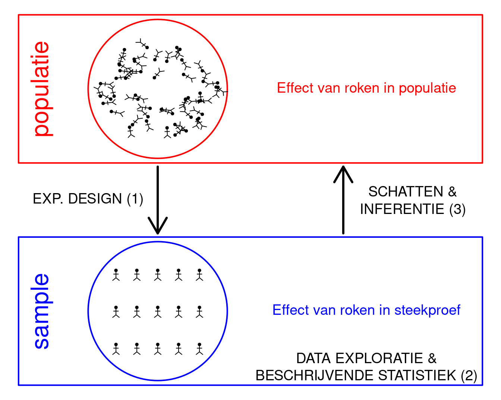
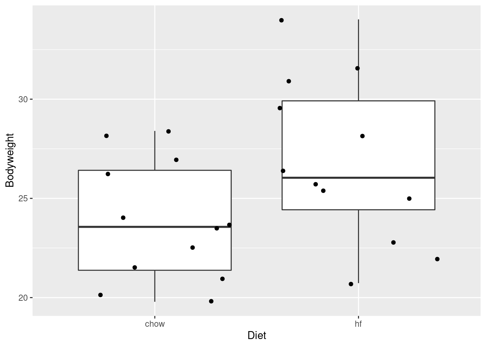

Experimenteel Design I: replicatie en power
Lieven Clement
statOmics, Ghent University (https://statomics.github.io)


1 Concepten
- Experimentele eenheden zijn subjecten, planten, proefdieren of objecten die aan behandelingen worden onderworpen in een experimentele studie.
- Observationele eenheden zijn de subjecten, planten proefdieren of objecten waarop we metingen doen. Meestal zijn de experimentele en observationele eenheden hetzelfde. Als dat niet het geval is heeft met vaak pseudoreplicatie.
- Experimentele eenheden representatief voor populatie: Randomisatie
- Replicatie: technisch vs biologisch, steekproefgrootte - power
- Bronnen van variabiliteit: technisch, biologisch, binnen en tussen subjecten.
2 Replicatie
Paper over replicatie in Nature Methods (2 pagina’s) [PDF]
2.1 Voorbeeld
In een RNA-seq experiment willen de onderzoekers het effect nagaan van een medicijn op de gen expressie.
Mogelijkse onderzoeksvraag
- Is er een verschil in gemiddelde gen expressie tussen behandelde en niet behandelde samples
2.2 Bronnen van variabiliteit
TABLE 1 NATURE METHODS | VOL.11 NO.9 | SEPTEMBER 2014 | 879 - 880
| Replicate type | Replicate category\(^\text{a}\) | |
|---|---|---|
| Colonies | B | |
| Strains | B | |
| Animal study subjects | Cohoused groups | B |
| Gender | B | |
| Individuals | B | |
| Organs from sacrificed animals | B | |
| Methods for dissociating cells from tissue | T | |
| Sample preparation | Dissociation runs from given tissue sample | T |
| Individual cells | B | |
| RNA-seq library construction | T | |
| Runs from the library of a given cell | T | |
| Sequencing | Reads from different transcript molecules | V\(^\text{b}\) |
| Reads with unique molecular identifier (UMI) from a given transcript molecule | T |
- Replicates are categorized as biological (B), technical (T) or of variable type (V).
- Sequence reads serve diverse purposes depending on the application and how reads are used in analysis.
2.3 Op welk niveau moeten we repliceren?
- \(\text{var}(X)=\sigma^2_A+\sigma^2_C+\sigma^2_M=\sigma^2_{TOT}\)
- \(\text{var}(\bar{X})=\frac{\sigma^2_A}{n_A}+\frac{\sigma^2_C}{n_A n_C} + \frac{\sigma^2_M}{n_A n_C n_M}\)
 Figure 1 NATURE METHODS | VOL.11 NO.9 | SEPTEMBER 2014 | 879 - 880
Figure 1 NATURE METHODS | VOL.11 NO.9 | SEPTEMBER 2014 | 879 - 880
- Three levels of replication (two biological, one technical) with animal, cell and measurement replicates normally distributed with a mean across animals of 10 and ratio of variances 1:2:0.5. Solid green (biological) and blue (technical) dots show how a measurement of the expression (X = 12) samples from all three sources of variation. Distribution s.d. is shown as horizontal lines.
- Expression variance, Var(X), and variance of expression mean, Var(\(\bar X\)), computed across 10,000 simulations of nAnCnM = 48 measurements for unique combinations of the number of animals (nA = 1 to 48), cells per animal (nC = 1 to 48) and technical replicate measurements per cell (nM = 1 and 3). The ratio of Var(X) and Var(\(\bar X\)) is the effective sample size, n, which corresponds to the equivalent number of statistically independent measurements. Horizontal dashed lines correspond to biological and total variation. Error bars on Var(X) show s.d. from the 10,000 simulated samples (nM = 1).
Waar ligt interesse?
Karakteriseren van bronnen van variabiliteit in experiment ==> technische en biologische repeats zijn nodig
Voornamelijke interesse in schatten van effect van behandeling ==> focus op biologische repeats
Extra biologische repeats lumpen alle bronnen van variabiliteit: biologische + technische variabiliteit.
Goed experimenteel design vereist na denken over replicatie
- Identificeer onderzoeksvragen die men wenst te beantwoorden.
- Breng bronnen van variabiliteit in kaart in elke stap van het experiment
- Let op voor pseudoreplicatie, beoog zoveel mogelijk onafhankelijke repeats.
3 Power, steekproefgrootte en andere design aspecten.
Reading materials: Nature Methods (2013), 10(12), 1139–1140
3.1 Intermezzo lineare regression in matrix vorm
- Lineaire regressie is een belangrijke methode in statistische data analyse.
3.1.1 Scalaire vorm
- Stel dat men voor elke experimentele eenheid \(p\) predictoren meet \(\mathbf{x}=(x_1,\ldots,x_p)\) en
- continue respons \(Y\)
- het linear regressiemodel kan dan worden geschreven als: \[ Y=f(\mathbf{x}) +\epsilon=\beta_0+\sum\limits_{j=1}^p x_j\beta_j + \epsilon \] met i.i.d. \(\epsilon\sim N(0,\sigma^2)\)
3.1.2 Vector/Matrix vorm
- \(n\) observatie \((\mathbf{x}_1,y_1) \ldots (\mathbf{x}_n,y_n)\) with \(\mathbf{x}_1^T=[1 x_1 \ldots x_p]\)
- Regressie in matrix notatie \[\mathbf{Y}=\mathbf{X\beta} + \mathbf{\epsilon}\] met \(\mathbf{Y}=\left[\begin{array}{c}y_1\\ \vdots\\y_n\end{array}\right]\), \(\mathbf{X}=\left[\begin{array}{cccc} 1&x_{11}&\ldots&x_{1p}\\ \vdots&\vdots&&\vdots\\ 1&x_{n1}&\ldots&x_{np} \end{array}\right]\) or \(\mathbf{X}=\left[\begin{array}{c} \mathbf{x}_1^T\\\vdots\\\mathbf{x}_n^T\end{array}\right]\), \(\boldsymbol{\beta}=\left[\begin{array}{c}\beta_0\\ \vdots\\ \beta_p\end{array}\right]\) and \(\mathbf{\epsilon}=\left[\begin{array}{c} \epsilon_1 \\ \vdots \\ \epsilon_n\end{array}\right]\)
3.2 kleinste kwadraten techniek/Least Squares (LS)
Minimimaliseer de residuele kwadratensom \[\begin{eqnarray*} RSS(\boldsymbol{\beta})&=&\sum\limits_{i=1}^n e^2_i\\ &=&\sum\limits_{i=1}^n \left(y_i-\beta_0-\sum\limits_{j=1}^p x_{ij}\beta_j\right)^2 \end{eqnarray*}\]
of in matrix notatie
\[ \text{RSS}(\boldsymbol{\beta})=(\mathbf{Y}-\mathbf{X\beta})^T(\mathbf{Y}-\mathbf{X\beta}) \]
\[\rightarrow \hat{\boldsymbol{\beta}}=\text{argmin}_\beta \text{ RSS}(\boldsymbol{\beta})\]
3.2.1 Minimimaliseer RSS
\[ \begin{array}{ccc} \frac{\partial RSS}{\partial \boldsymbol{\beta}}&=&\mathbf{0}\\\\ \frac{(\mathbf{Y}-\mathbf{X\beta})^T(\mathbf{Y}-\mathbf{X}\boldsymbol{\beta})}{\partial \boldsymbol{\beta}}&=&\mathbf{0}\\\\ -2\mathbf{X}^T(\mathbf{Y}-\mathbf{X}\boldsymbol{\beta})&=&\mathbf{0}\\\\ \mathbf{X}^T\mathbf{X\beta}&=&\mathbf{X}^T\mathbf{Y}\\\\ \hat{\boldsymbol{\beta}}&=&(\mathbf{X}^T\mathbf{X})^{-1}\mathbf{X}^T\mathbf{Y} \end{array} \]
3.3 Variantie schatter?
\[ \begin{array}{ccl} \hat{\boldsymbol{\Sigma}}_{\hat{\boldsymbol{\beta}}} &=&\text{var}\left[(\mathbf{X}^T\mathbf{X})^{-1}\mathbf{X}^T\mathbf{Y}\right]\\\\ &=&(\mathbf{X}^T\mathbf{X})^{-1}\mathbf{X}^T\text{var}\left[\mathbf{Y}\right]\mathbf{X}(\mathbf{X}^T\mathbf{X})^{-1}\\\\ &=&(\mathbf{X}^T\mathbf{X})^{-1}\mathbf{X}^T(\mathbf{I}\sigma^2)\mathbf{X}(\mathbf{X}^T\mathbf{X})^{-1} \\\\ &=&(\mathbf{X}^T\mathbf{X})^{-1}\mathbf{X}^T\mathbf{I}\quad\mathbf{X}(\mathbf{X}^T\mathbf{X})^{-1}\sigma^2\\\\ %\hat{\boldmath{\Sigma}}_{\hat{\boldsymbol{\beta}}}&=&(\mathbf{X}^T\mathbf{X})^{-1}\mathbf{X}^T\text{var}\left[\mathbf{Y}\right](\mathbf{X}^T\mathbf{X})^{-1}\mathbf{X}\\ &=&(\mathbf{X}^T\mathbf{X})^{-1}\mathbf{X}^T\mathbf{X}(\mathbf{X}^T\mathbf{X})^{-1}\sigma^2\\\\ &=&(\mathbf{X}^T\mathbf{X})^{-1}\sigma^2 \end{array} \]
De onzekerheid op model parameters hangt dus af van de residuele variabiliteit en het de proefopzet!
Hoe groter \(\mathbf{X}^T\mathbf{X}\) hoe meer informatie het experiment zal hebben over de model parameters en hoe kleiner hun variantie en standaard errors!
Factoriële designs?
Designs with continue predictoren?
De effectgrootte van interesse is typisch een lineaire combinatie van
de model parameters,
\[
l_0 \times \beta_0 + l_1 \times \beta_1 + ... + l_{p-1} \times
\beta_{p-1} = \mathbf{L}^T\boldsymbol{\beta}
\]
De nulhypothese van onze test kan dan worden geschreven als
\[ H_0: \mathbf{L}^T\boldsymbol{\beta} = 0 \]
vs de alternatieve hypothese
\[ H_1: \mathbf{L}^T\boldsymbol{\beta} \neq 0 \]
En het bewijs in het experiment tegen \(H_0\) kan worden gekwantificeerd met de t-test statistiek:
\[ t=\frac{\mathbf{L}^T\hat{\boldsymbol{\beta}} - 0}{\text{se}_{\mathbf{L}^T\hat{\boldsymbol{\beta}}}} \] die een t-distributie volgt met n-p vrijheidsgraden onder de nul hypothese als alle aannames van het model geldig zijn.
De kracht van de toets is dan
\[P(p < 0.05 | H_1)\] en hangt af van
- de werkelijke effectgrootte in de populatie \(\mathbf{L}^T\boldsymbol{\beta}\).
- Het aantal observaties: SE en df van t-test.
- Keuze van de designpunten
- Keuze van significantie-niveau \(\alpha\).
We kunnen dit evalueren aan de hand van simulaties.
3.4 Muis voorbeeld
In 2021 publiceerden Choa et al. dat cytokine Thymic stromal lymphopoietin (TSLP) vetverlies induceert bij muizen die een vet dieet krijgen door de secretie van talg. [html] [PDF]
Stel dat je een gelijkaardig experiment op wil zetten om na te gaan of cytokine interleukin 25 (IL) ook een effect heeft op het gewicht van muizen.
Je plant een studie met een controle groep muizen die een hoog vet dieet krijgen (HFD) en een behandelingsgroep die een HFD dieet met IL krijgt.
Wat is de vereiste steekproefgrootte om een bepaald effect op te pikken van de behandeling?
3.4.1 Hoe zal je de data van het experiment analyseren?
\(H_0\): Er is geen verschil in het gewicht van muizen die een dieet met IL krijgen en muizen die het controle dieet krijgen.
\(H_1\): Het gewicht is gemiddelde verschillend tussen muizen die het IL dieet krijgen en muizen die het controle dieet krijgen.
Two sample t-test of een t-test op de helling van het lineaire model met 1 dummy variabele
\[ Y_i = \beta_0 + \beta_1 X_\text{iIL} + \epsilon_i\]
\[ \text{met } X_\text{iIL}=\begin{cases}X_{iIL}=0 & \text{HFD}\\X_{iIL}=1 & \text{HFD + IL}\end{cases}. \]
- Geschatte effectgrootte?
\[\hat\delta = \bar X_{IL} - \bar X_{c} = \hat \beta_1\]
- Test statistiek \[ T = \frac{\bar{X}_{IL}-\bar{X}_{c}}{SD_\text{pooled} \times \sqrt{\frac{1}{n_1} + \frac{1}{n_2}}} = \frac{\hat\beta_1}{\text{SE}_{\hat\beta_1}} \]
- \(\hat \beta_1\) is een onvertekende schatter van het werkelijk gewichtsverschil (\(\delta =\mu_{IL}-\mu_{c} = \beta_1\)) dat zou voorkomen in de populatie van muizen gevoed met HFD vs muizen gevoed met HFD + IL.
3.4.2 Power?
\[ P[p < \alpha \vert \beta_1 \neq 0] \]
De kracht (power) zal dus afhangen van
- Het werkelijke gemiddelde gewichtsverschil \(\beta_1\) in de populatie.
- De variabiliteit van de gewichtsmetingen
- het significantie-niveau \(\alpha\)
- steekproefgrootte \(n_{IL}\) en \(n_c\) in beide groepen
We kunnen de power schatten als
- voldaan is aan de aannamens van het model: gewicht in beide groepen is normaal verdeeld met gelijke variantie
en als we de
standaard deviatie kennen van gewichtsmetingen rond hun groepsgemiddelde voor muizen die een HFD diet krijgen
de echte effectgrootte in de populatie
\(n_1\) en \(n_2\)
3.4.3 Gebruik data uit vorig experiment om inzicht te krijgen in de gewichtsdata van muizen
Stel dat we toegang hebben tot data van een vorig experiment (hier dat van Karen Svenson en Dan Gatti, gefinancierd door P50 GM070683 en beschikbaar op PH525x)
mice <- read.csv("https://raw.githubusercontent.com/genomicsclass/dagdata/master/inst/extdata/femaleMiceWeights.csv")
mice %>%
ggplot(aes(x=Diet,y=Bodyweight)) +
geom_boxplot(outlier.shape=FALSE) +
geom_jitter()
mice %>%
ggplot(aes(sample=Bodyweight)) +
geom_qq() +
geom_qq_line() +
facet_wrap(~Diet)mice <- mice %>% mutate(Diet = as.factor(Diet))
miceSum <- mice %>%
group_by(Diet) %>%
summarize_at("Bodyweight",list(mean=~mean(.,na.rm=TRUE),
sd=~sd(.,na.rm=TRUE),
n=function(x) x%>%is.na%>%`!`%>%sum)) %>%
mutate(se=sd/sqrt(n))
miceSum In het experiment werden twee diëten gebruikt:
- gewoon diet o.b.v. granen (Chow)
- Heel vet dieet (high fat: hf)
We kunnen de data van de hf muizen gebruiken als input voor onze power analyse.
- De data van hf muizen lijken normaal verdeeld te zijn.
- Het gemiddelde gewicht van een hf muis is 26.8g
- De standaard deviatie (SD) van het gewicht van hf muizen is 4.1g
Effectgroote?
- De alternative hypothese is complex.
- Omvat alle mogelijke effecten!
- Om een power analyse te doen kiezen we daarom een minimale effectgrootte die we wensen op te pikken in het nieuwe experiment.
- Veronderstel dat we een gewichtsverschil willen oppikken van minimaal 10%.
delta <- - round(miceSum$mean[2] *.1,1)
delta[1] -2.7Merk op dat het gemiddeld gewicht dan dicht komt bij dat van muizen in het pilootexperiment die werden gevoed met het normale dieet.
We kunnen nu een simulatie studie opzetten om de power te berekenen voor een experiment met 8 muizen in elke groep.
3.4.3.1 Eén simulatie
set.seed(1423)
n1 <- n2 <- 8
b0 <- round(miceSum$mean[2],1)
b1 <- - delta
sd <- round(miceSum$sd[2],1)
alpha <- 0.05
x <- rep(0:1,c(n1,n2))
y <- b0 + b1 * x + rnorm(n1+n2,0, sd = sd)
fit <- lm(y~x)
bhat <- fit$coef
stat <- summary(fit)
summary(fit)$coef[2,] Estimate Std. Error t value Pr(>|t|)
2.5972480 1.7919658 1.4493848 0.1692595 Voor het gesimuleerde experiment konden we het effect van de behandeling niet oppikken bij het \(\alpha\)=0.05 (p = 0.17) significantie-niveau!
- We moeten het experiment herhalen om de power te schatten.
- We zullen de simulatie daarom coderen in een functie die we kunnen hergebruiken.
3.4.3.2 Simulatie van herhaalde experimenten (repeated experiments)
library(multcomp)
n1 <- n2 <- 8
b0 <- round(miceSum$mean[2],1)
b1 <- - delta
sd <- round(miceSum$sd[2],1)
predictorData <- data.frame(Diet = rep(c("c","hf"),c(n1,n2)) %>% as.factor)
alpha <- 0.05
simLm <- function(form, data, betas, sd, contrasts, simIndex = NA)
{
dataSim <- data
X <- model.matrix(form,dataSim)
dataSim$ySim <- X%*%betas + rnorm(nrow(dataSim),0,sd)
form <- formula(paste("ySim ~",form[[2]]))
fitSim <- lm(form,dataSim)
mcp <- glht(fitSim,linfct = contrasts)
return(summary(mcp)$test[c("coefficients","sigma","tstat","pvalues")]%>% unlist)
}
simLm(
form = ~Diet,
data = predictorData,
betas = c(b0,b1),
sd = sd,
contrasts = "Diethf = 0")coefficients.Diethf sigma.Diethf tstat.Diethf pvalues
1.9444623 2.0931302 0.9289734 0.3686439 We hebben nu een generiek functie waarmee we data kunnen simuleren die normaal verdeeld zijn voor elk mogelijk design die we met het lineair model kunnen analyseren.
De functie heeft volgende argumenten:
form: One sided formula including the structure of the predictors in the modeldata: Data frame with the predictor values for the designbetas: A vector with values for all mean model parameterssd: The standard deviation of the errorcontrasts: a scalar or a vector with the null hypotheses that we would like to assess.simIndex: an arbitrary argument that is not used by the function but that will allow it to be used in an sapply loop that runs from 1 up to the number of simulations.
Simuleer nSim = 1000 herhaalde experimenten:
set.seed(1425)
nSim <- 1000
simResults <- t(sapply(1:nSim,simLm,form = ~Diet,data = predictorData,betas = c(b0,b1),sd = sd,contrasts = "Diethf = 0"))
power <- mean(simResults[,4] < alpha)
power[1] 0.221We hebben een power van 22.1% om het behandelingseffect op te pikken met 8 biologische herhalingen in elke behandelingsgroep.
Merk op dat de power van een experiment ook het hoogste is als het aantal observaties gebalanceerd is, m.a.w. \(n_1=n_2\).
3.4.3.3 Power voor verschillende steekproefgroottes
We kunnen de power nu berekenen voor meerdere steekproefgrootes.
power <- data.frame(n=c(3,5,10,25,50,75,100),power=NA)
for (i in 1:nrow(power))
{
n1 <- n2 <- power$n[i]
predictorData <- data.frame(Diet = rep(c("c","hf"),c(n1,n2)) %>% as.factor)
simResults <- t(sapply(1:nSim,simLm,form = ~Diet,data = predictorData,betas = c(b0,b1),sd = sd,contrasts = "Diethf = 0"))
power$power[i] <- mean(simResults[,"pvalues"] < alpha)
}
powerpower %>%
ggplot(aes(x=n,y=power)) +
geom_line()3.4.3.4 Bestudeer power in functie van steekproefgrootte en effectgrootte
Merk op dat
- het teken van delta arbitrair is omdat we tweezijdig testen.
- het intercept arbitrair is omdat we alleen testen op \(\beta_1\)
- We nemen daarom typisch \(\beta_0 = 0\)
nSim <- 1000
b0 <- 0
deltas <- c(1,2,3,5,10)
sd <- round(miceSum$sd[2],1)
ns <- c(3,5,10,20,25,50,75,100)
power <- data.frame(b1=rep(deltas,each=length(ns)),
n=rep(ns,length(deltas)),
power=NA)
for (i in 1:nrow(power))
{
b1 <-power$b1[i]
n1 <- n2 <- power$n[i]
predictorData <- data.frame(Diet = rep(c("c","hf"),c(n1,n2)) %>% as.factor)
simResults <- t(sapply(1:nSim,simLm,form = ~Diet,data = predictorData,betas = c(b0,b1),sd = sd,contrasts = "Diethf = 0"))
power$power[i] <- mean(simResults[,"pvalues"] < alpha)
}power %>%
ggplot(aes(x=n,y=power,col=b1%>%as.factor)) +
geom_line()Merk op dat de power curves wat schokkerig zijn omdat we maar een beperkt aantal steekproefgroottes en een beperkt aantal simulaties uitvoerden. Voor de lage powers is het aantal simulaties zeker onvoldoende om heel betrouwbare schattingen van de power te bekomen.
4 Opmerkingen
De code kan eenvoudig aangepast worden naar andere designs (zie oefeningen)
- predictor data
- formula
- contrast
De simulaties kunnen lang duren wanneer je veel scenario’s evalueert.
- Meer efficiënte code met matrices
- Voor two group comparison bestaat een analytische oplossing.
4.1 Meer efficiënte code met matrices
Code is veel sneller. We simulaleren nu 20 keer meer experimenten in een veel kortere tijd!
nSim <- 20000
b0 <- 0
sd <- round(miceSum$sd[2],1)
ns <- c(3,5,10,20,25,50,75,100)
deltas <- c(1,2,3,5,10)
powerFast <- matrix(NA,nrow=length(ns)*length(deltas),ncol=3) %>% as.data.frame
names(powerFast) <- c("b1","n","power")
i <- 0
for (n in ns)
{
n1 <- n2 <- n
### Simulation
predictorData <- data.frame(Diet = rep(c("c","hf"),c(n1,n2)) %>% as.factor)
design <- model.matrix(~Diet,predictorData)
L <- limma::makeContrasts("Diethf",levels = colnames(design))
for (b1 in deltas)
{
ySim <- rnorm(nrow(predictorData)*nSim,sd=sd)
dim(ySim) <-c(nrow(predictorData),nSim)
ySim <- ySim + c(design %*%c(b0,b1))
ySim <- t(ySim)
### Fitting
fitAll <- limma::lmFit(ySim,design)
### Inference
varUnscaled <- c(t(L)%*%fitAll$cov.coefficients%*%L)
contrasts <- fitAll$coefficients %*%L
seContrasts <- varUnscaled^.5*fitAll$sigma
tstats <- contrasts/seContrasts
pvals <- pt(abs(tstats),fitAll$df.residual,lower.tail = FALSE)*2
i <- i+1
powerFast[i,] <- c(b1,n,mean(pvals < alpha))
}
}powerFast %>%
ggplot(aes(x=n,y=power,col=b1%>%as.factor)) +
geom_line()4.2 Meer efficiënte code gebaseerd op de analytische oplossing voor een two group comparison
Voor de two sample t-test bestaat er een analytische oplossing om de power te berekenen.
In deze context maakt men typisch gebruik van de “Cohen’s effect size”:
\(D = \frac{\delta}{SD}\)
power.t.test(n=8, delta = delta, sd = sd, type='two.sample')
Two-sample t test power calculation
n = 8
delta = 2.7
sd = 4.1
sig.level = 0.05
power = 0.2320512
alternative = two.sided
NOTE: n is number in *each* groupMerk op dat de power overeenkomt met degene die we via simulaties hebben geschat!
b0 <- 0
sd <- round(miceSum$sd[2],1)
ns <- c(3,5,10,20,25,50,75,100)
deltas <- c(1,2,3,5,10)
powerTheo <- data.frame(deltas=rep(deltas,each=length(ns)),
n=rep(ns,length(deltas)),
power=NA)
powerTheo$power <- apply(powerTheo[,1:2],1,function(x) power.t.test(delta=x[1],n=x[2],sd=sd,type="two.sample")$power)powerTheo %>%
ggplot(aes(x=n,y=power,col=deltas%>%as.factor)) +
geom_line()